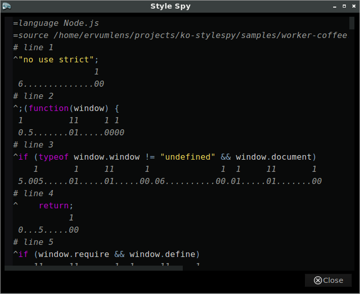

ko-stylespy
A Komodo Edit extension for spying on editor styles.
Style Spy
What
Style Spy is an extension for Komodo IDE and Komodo Edit.
Why
Style Spy simplifies debugging and prototyping styles used in the Komodo editor.
Where
The extension XPI is available at https://ervumlens.github.io/ko-stylespy .
How
Once installed, the extension adds a new Style Spy menu under the main Toolsmenu.
There is a Help item that explains how Style Spy is used.
When
Today. Right now.
SHOW
Here's a screenshot... 
Bad
Okay, well, it's a work in progress. You can report a bug, make an enhancement request, or ask a question at https://github.com/ervumlens/ko-stylespy/issues .
Terrible
Hey, you get what you pay for, right?  If you'd like to —
If you'd like to —
Horrible
Sure. Everyone has a right to an opinion, but really if it's that —